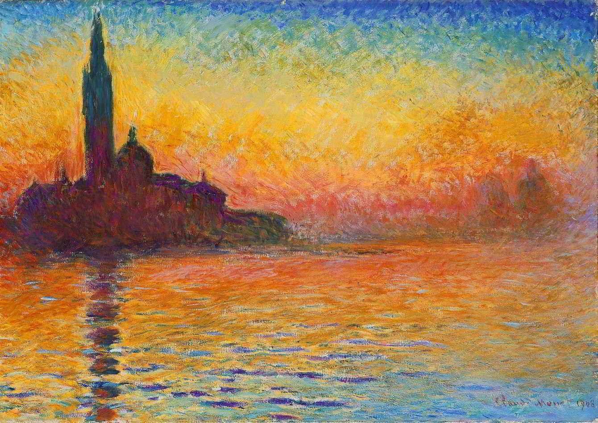

Claude Monet

Vaneza ao por do sol, obra feita por Monet
Algumas curiosidades:
- Nascido em 1840, Claude Monet foi um grande pintor francês
- Monet foi um dos maiores pintores da história na técnica a óleo
- Captar momentos ao livre relacionados com cenas cotidianas foi o maior foco de Monet
- As cores vivas e a luminosidade são características presentes em sua obra
- a técnica de Monet desenvolvida na época foi considerada mais tarde como umas das mais belas do mundo
- Monet continuou produzindo obras até a data de sua morte, embora tenha tido problemas de visão
- Monet morreu a 1926, aos 86 anos, sem nunca ter parado de pintar, em consequência de um câncer de pulmão
Se quiser saber mais sobre Monet acesse aqui!